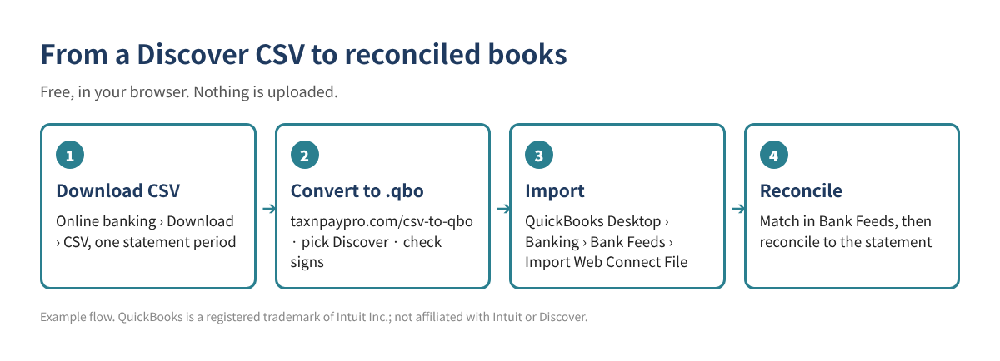

You downloaded your Discover activity as a CSV file, but QuickBooks Desktop doesn't import CSV files into the bank register. It imports Web Connect (.qbo) files, or IIF files for older versions. This guide shows how to get the CSV from Discover, what its columns look like, how to turn it into a .qbo file for free in your browser, and how to import and check it.
Short version: download CSV from Discover → open the free CSV to QBO converter → pick Discover → check the preview and balance → save the .qbo → in QuickBooks Desktop go to Banking › Bank Feeds › Import Web Connect File.

Sign in to online banking on a computer (most banks don't offer downloads in the phone app), open the account, and look for Download or a download icon above the transaction list. Choose the date range and pick CSV (sometimes called "Spreadsheet" or "Comma delimited"). Menu names change from time to time; if you can't find it, search the bank's help center for "download transactions".
The converter recognizes the Discover layout below and sets the columns and signs for you. It helps to know them so you can spot a wrong file.
| File | Columns (as of 2026) | What to watch |
|---|---|---|
| Card | Trans. Date, Post Date, Description, Amount, Category | Charges are positive and payments negative. The converter flips the sign and uses Post Date. |
Here is what three rows look like after the converter reads them. These are example values, not real transactions:
| Date | Payee | Amount (QuickBooks sign) |
|---|---|---|
| 10/03/2026 | COFFEE SHOP #12 (example) | -8.75 |
| 10/05/2026 | OFFICE SUPPLY STORE (example) | -142.30 |
| 10/07/2026 | PAYMENT THANK YOU (example) | 500.00 |
Discover moved QuickBooks Desktop bank feeds for Discover Bank and Discover Card to a new Express Web Connect connection. If your feed broke after that change, a CSV plus the converter is a simple way to fill the gap while you reconnect.
This converter runs entirely in your browser. The file isn't uploaded to a server. Still, never share bank passwords, and delete downloaded files you no longer need.
Some banks and some account types do. If the bank's own QuickBooks or Web Connect file imports without errors, use it. The converter is for when you only have a CSV or the bank file fails.
QuickBooks checks a bank ID inside the .qbo file. In the converter's settings you can change the bank ID (INTU.BID); the default 3000 works for many banks.
Usually not. QuickBooks Online can upload CSV files directly in its Banking screen. This guide is for QuickBooks Desktop.
Need a workbook for cleanup after import? The Duplicate Transaction & Bank Reconciliation Difference Finder is a free download (Excel + PDF guide, no sign-up).
This article is general educational information, not tax, legal or accounting advice. Bank download menus and file layouts change; check your own file before importing. Example values are made up.
QuickBooks is a registered trademark of Intuit Inc.; not affiliated with or endorsed by Intuit. Discover is a trademark of its owner; this article is not affiliated with or endorsed by Discover.
Sources: Discover: Bank and credit card connectivity change (PDF) · Free Bank CSV to QBO converter